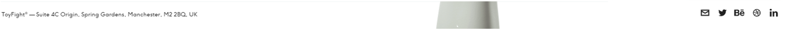
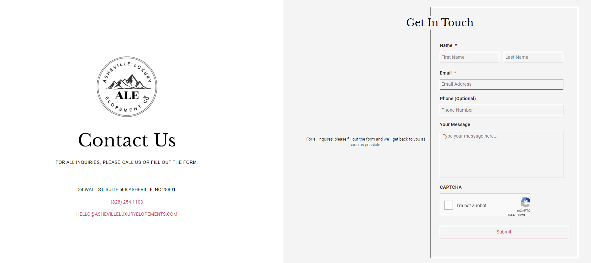
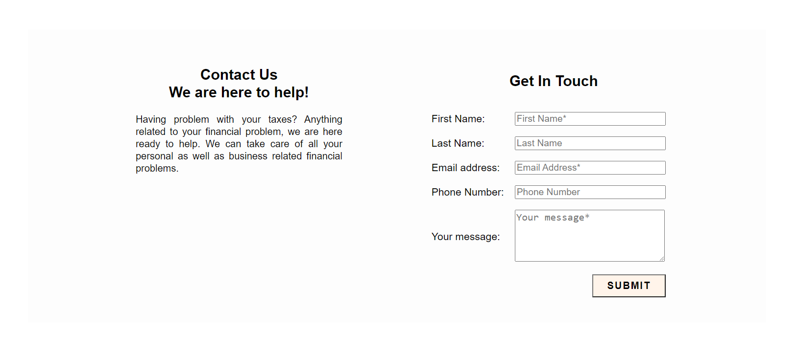

Research
I had no idea what a portfolio website should look like before creating this one. That's why I needed to do some research and find some examples. After doing some research, I found some websites that inspired me to create something similar. Here are the websites from which I drew inspiration.
1. Navigation Bar
The navigation bar I have made in my website was inspired from Underbelly.is. As you can see there are some similarities such as the logo and the orientation of the navigation bar. As hard as I tried, i could not make the navigation bar as good as theirs. I included a background colour which I think fits better in my website.
2. Home Page
The big background in the homepage in my website was inspired by yanick.co. The big background with a logo in the middle looks quite good in the website. Although they both look similar, there are quite some differences. The backgorund in my website is parallax and the logo is very much different. You can see the differences by clicking on the videos to play them.
3. Newsletter Banner

This Newsletter banner from nordiceye.com immediately caught my attention when I first visited their site. I found it as a very creative way to catch attention and tried to make one for my own website. Although my form as quite some differences in terms of form validation and the way of presenting error message is quite different as well.
4. Copyright Column
The idea of putting social media icons in the footer section came from toyfight.co. It is a great way to promote one's social media accounts and makes them easily accessible to the visitors.
5. Contact Form
 The contact form in ashevilleluxuryelopements.com looked very attractive to me as it is simple yet looks very good to the eyes. I took a very liking to this idea and tried to make a contact page of my own in my website. It is a great way to get feedback from visitors and clients.